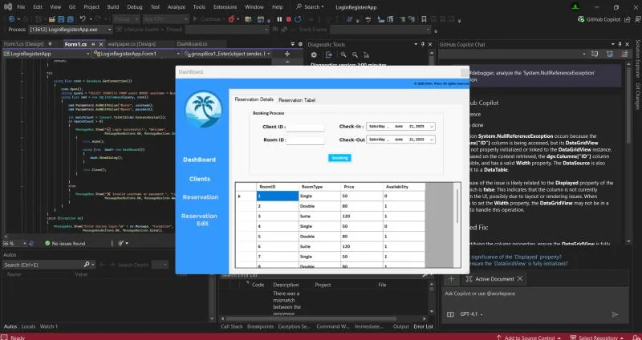

06 / Desktop application · Relational data
Hotel Management.
A Windows application bringing customer records, rooms, and reservations into a single workflow.
- Status
- Desktop project
- Context
- Hotel operations
- Technology
- C# · .NET Framework · Windows Forms · SQLite

01 / OVERVIEW
The problem
Room availability, customer records, and reservations need to remain connected when a booking is made.
The approach
A Windows Forms interface organizes client, room, and booking workflows around a local SQLite database. Booking code validates a client, checks room availability, records a reservation, and updates the room state.
My contribution
Developed the desktop application, documented in my public project profile and C# repository.
02 / SYSTEM FLOW
How it connects
- 01Windows Forms UI
- 02Booking validation
- 03SQLite queries
- 04Rooms + reservations
A simplified overview of the implementation.
03 / ENGINEERING
Inside the implementation
- Customer and room management screens.
- Reservation creation with client and room checks.
- Local relational persistence using SQLite.
- A desktop interface designed around front-desk workflows.
The engineering consideration
The core engineering concern is connecting interface actions to persistent state: a reservation must refer to an existing customer and reflect room availability.

04 / SCOPE & STATUS
What this work demonstrates
Shown as a learning and application-development project. Multi-user concurrency, production security, and use by an operating hotel have not been independently established.